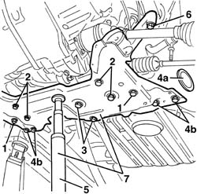

4410D14 FRONT SUSPENSION CROSSBEAM - R+R WITH WISHBONES REMOVED
- Path
- Procedures > 44 SUSPENSION AND WHEELS > 4410 FRONT SUSPENSION > 4410D FRAME AND CROSS BEAM > 4410D14 FRONT SUSPENSION CROSSBEAM - R+R WITH WISHBONES REMOVED
- Kind
- repair procedure (removal / refitting; the operation number is the code)
- Applies to
- all engines; all production periods
- Interactive page
- https://sloeber94.github.io/elrnDB-fDct/en/#/244001187
Applies to: all engines; all production periods
 Removing
Removing
 Refitting
RefittingOp. 4410D13 FRONT SUSPENSION BEAM - R R
1. Undo the bolts fixing the anti-roll bar.
2. Undo the bolts fixing the steering box.
3. Undo the bolts fixing the engine reaction rod.
4. Working on both sides, release the protection (4a) and undo the rear bolts with the nut (4b) fixing the crossmember to the bodyshell.
5. Position a jack under the crossmember.
6. Working on both sides, undo the front bolts fixing the crossmember to the bodyshell.
7. Remove the crossmember using the jack.

Applies to: all engines; all production periods
Refitting
Removing- Check that the crossmember is not damaged.
- Place the crossmember in position with the assistance of the jack.
- Tighten the front bolts fixing the crossmember to the bodyshell.
 | Value - daNm | Fastening | Component | Ø |
|---|---|---|---|---|
. | 18.1 - 24.8 | Front bolt | ENGINE OR ROD ANCHORAGE BEAM | M16x1.5 |
- Remove the lifting device.
- Tighten the rear bolts fixing the crossmember to the bodyshell.
| Value - daNm | Fastening | Component | Ø |
|---|---|---|---|---|
. | 18.1 - 24.8 | Rear bolt | ENGINE OR ROD ANCHORAGE BEAM | M16x1.5 |
- Fit the protection.
- Tighten the bolts fixing the engine reaction rod.
| Value - daNm | Fastening | Component | Ø |
|---|---|---|---|---|
. | 11.9 - 17.2 | Bolt | LOWER ENGINE FASTENING | M14x1.5 |
- Tighten the bolts fixing the steering box.
| Value - daNm | Fastening | Component | Ø |
|---|---|---|---|---|
. | 9.6 - 14.1 | Bolt | steering box | - |
- Tighten the bolts fixing the anti-roll bar.
| Value - daNm | Fastening | Component | Ø |
|---|---|---|---|---|
. | 7.7 - 11.2 | Bolt | FRONT ANTI-ROLL BAR | M12x1.5 |
Topics linked from this page (3)
- 4410D13 FRONT SUSPENSION BEAM - R R
- 4450A10 FRONT WHEEL GEOMETRY - CHECK USING OPTICAL EQUIPMENT - INCLUDES FRONT WHEEL TOW-IN ADJUSTMENT IF NECESSARY
- 4450A20 FRONT WHEEL CASTER